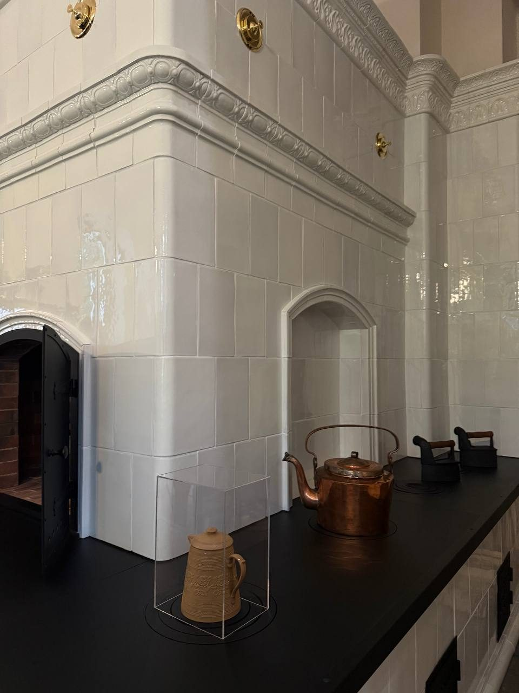

Кухонные печные комплексы павильона «Китайская кухня»


Для восстановленного павильона «Паллада» изготовила два комплекса кухонных печей — 936 изразцов и 45 металлических деталей.
Павильон
Павильон «Китайская кухня» был построен в середине XIX века для обслуживания Китайского дворца. Историческое печное оборудование не сохранилось: о первоначальном устройстве кухни свидетельствовали документы и подлинный кирпичный дымоход.
Что изготовили
Это не отдельные декоративные печи, а связанная система оборудования дворцовой кухни. В её состав вошли глухая плита с духовой печью, русская печь, вертел и шесток с котлом.
Как восстанавливали устройство
Устройство комплексов восстанавливали по историческим аналогам, а их архитектурно-художественный облик — по описанию павильона. Обмеры и проектирование выполнили в 2022–2023 годах, изготовление — в 2023–2025 годах. Оба комплекса установили в историческом интерьере, сохранив старый дымоход как подлинное свидетельство первоначального устройства кухни.
Открытие
После реставрации павильон открылся для посетителей 27 июня 2025 года. Работы «Паллады» включали исследование исторического интерьера, проектирование, производство изразцов и металлических элементов и монтаж печного оборудования.
Комплексы в интерьере